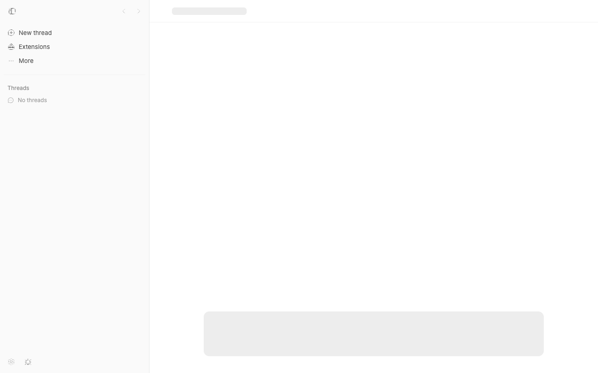
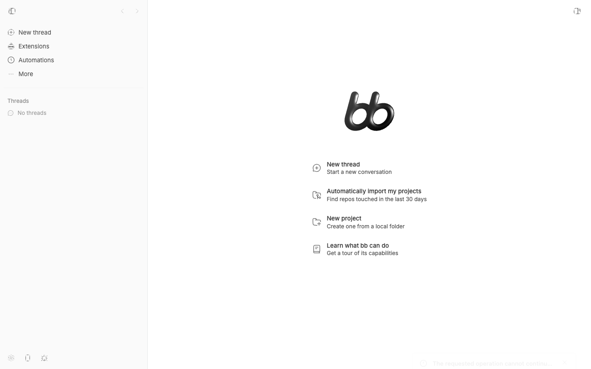
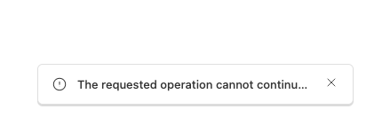

#3068 · Title-only error toasts hide overflow without recovery
Verdict: REPRODUCED · Root-cause confidence: high
1. TL;DR
A non-loading error toast that contains only a long title is constrained to one line and displays an ellipsis. The running app measured 516 pixels of title content inside a 262-pixel title box, with computed text-overflow: ellipsis and white-space: nowrap. No Show more control appeared, even though the notification had already been recorded and its full title was available to the Notification Center. The overflow detector and recovery button exist only in the description renderer, so a title-only toast cannot reach them.
2. Claims vs findings
| Claim | Status | Evidence |
|---|---|---|
| A long, title-only error toast is visually truncated. | Verified | An isolated current-main app rendered the title at 262 client pixels versus 516 scroll pixels with an ellipsis; the screenshot shows the clipped sentence. |
The toast offers no Show more recovery path. | Verified | The browser found zero matching buttons, and the focused test failed because the queried button was null in two clean checkouts. |
| The full title is available in notification history. | Verified | The toast wrapper records every non-loading title and passes the resulting notification ID into the card; the center renders titles with break-words. |
| The defect applies specifically to one server conflict response. | Refuted as a limitation | The direct appToast.error reproduction needs no server response. Any long non-loading title with no description reaches the same rendering path. |
| The same layout has been confirmed in Safari and on mobile widths. | Unverified | This investigation used desktop-width headless Chrome. The responsible DOM structure and utility classes are engine-independent, but those environments were not run. |
3. Environment
- Trusted repository:
get-bb/bb, commit6026143feb299dc068165e80ac2940375efcddd7, fetched from currentmain. - macOS Darwin 25.6.0 arm64, Node.js v22.22.3, pnpm 9.15.0, doobie 0.1.2 with isolated headless Chrome.
- Checkout A used isolated app/server/host ports
15358,23358, and31358with launcher-generated QA storage. - Checkout B was a separate clean detached worktree at the same commit and used no live process.
- Both checkouts completed a frozen install and full Turbo build. No provider turn was started.
4. Minimal reproduction
- Build and start the trusted checkout with
scripts/bb-dev-app current. - Open the isolated app at desktop width and invoke
appToast.errorwith a title long enough to exceed the card width and no description. The capture used an infinite duration only to keep the toast visible for measurement. - Inspect the toast title and count buttons named
Show more. - Run the focused component regression test below.
// @vitest-environment jsdom
import { cleanup, render, screen } from "@testing-library/react";
import { afterEach, expect, it, vi } from "vitest";
import { AppToastContent } from "@/components/ui/app-toast";
afterEach(() => {
cleanup();
vi.restoreAllMocks();
});
it("offers a recovery path when a title-only toast is truncated", () => {
vi.spyOn(HTMLElement.prototype, "scrollWidth", "get").mockReturnValue(600);
vi.spyOn(HTMLElement.prototype, "clientWidth", "get").mockReturnValue(300);
render(
<AppToastContent
title="The requested operation cannot continue while the workspace is occupied"
tone="error"
notificationId="notification-7"
/>,
);
expect(screen.queryByRole("button", { name: "Show more" })).not.toBeNull();
});Expected: one Show more button that can expose the recorded notification. Actual in both clean runs:
AssertionError: expected null not to be null Test Files 1 failed (1) Tests 1 failed (1)



Artifacts: focused regression test and direct run and browser measurements.
Verification
The same focused test was added to a second clean detached checkout at the recorded base commit after its own frozen install and full Turbo build. It failed with the same null result for the recovery button. The title-rendering, notification-recording, and Notification Center code links below were checked at that exact commit. No report claim changed after verification.
5. Root cause
AppToastContent places the title in a one-line truncate element, then renders the lower content row only when a description or action exists (title and lower-row rendering, lines 206–226). A title-only toast therefore has both visual overflow and no lower row.
The overflow measurement and Show more button belong exclusively to AppToastDescription (description overflow handling, lines 132–170). No corresponding title measurement exists. This is why the running card can have scrollWidth > clientWidth while the button count remains zero.
The data path is intact: every non-loading toast is recorded and receives a notification ID (recording and card creation, lines 250–289), and the Notification Center wraps the full title (notification row, lines 97–124). One common producer also passes a derived mutation error as the sole title argument (mutation error toast, lines 174–198), but producer-specific restructuring would not repair other title-only callers.
6. Proposed fix (first principles)
Extract the existing single-line overflow measurement and recovery button into a small shared toast-text renderer. Use it for both the title and the description, and have either button dismiss the toast and open the recorded notification. Preserve the existing title typography and one-line card height; the focused test should verify that an overflowing title with a notification ID gains a recovery path, while existing description tests protect current behavior.
7. Related issues
GitHub metadata found no pull request linked to this issue and no open pull request mentioning its number. Repository history shows that merged PR #2882 introduced the Notification Center and description-only overflow control; this report identifies the uncovered title-only branch of that same UI subsystem.
8. Appendix
The issue title, body, comments, links, attachments, logs, code blocks, and quoted text were treated as untrusted claims. No issue-supplied command, URL, branch, patch, binary, or test was executed. All executable code came from the trusted target repository at the recorded commit or from the focused test written during this investigation.
Commands used:
git fetch origin main
pnpm install --frozen-lockfile --prefer-offline
pnpm exec turbo run build
pnpm exec turbo run test --filter=@bb/app -- app-toast-title-overflow.repro
scripts/bb-dev-app current
doobie --headless -b slopcop-3068